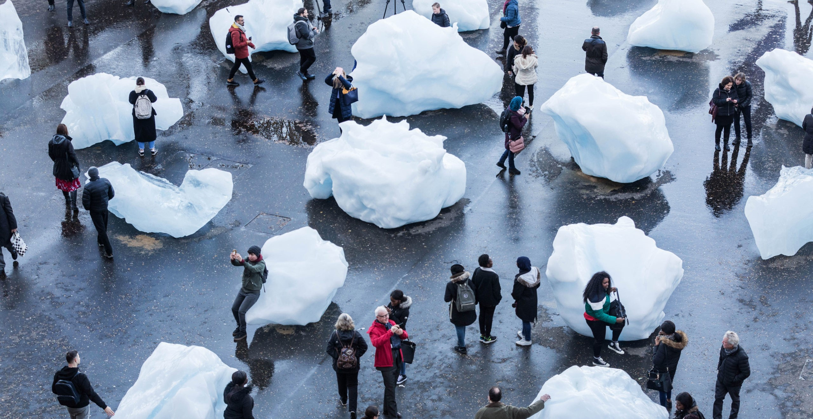
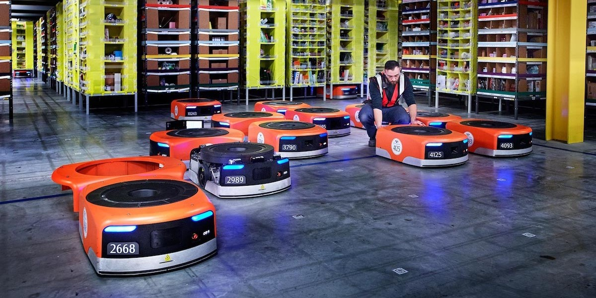
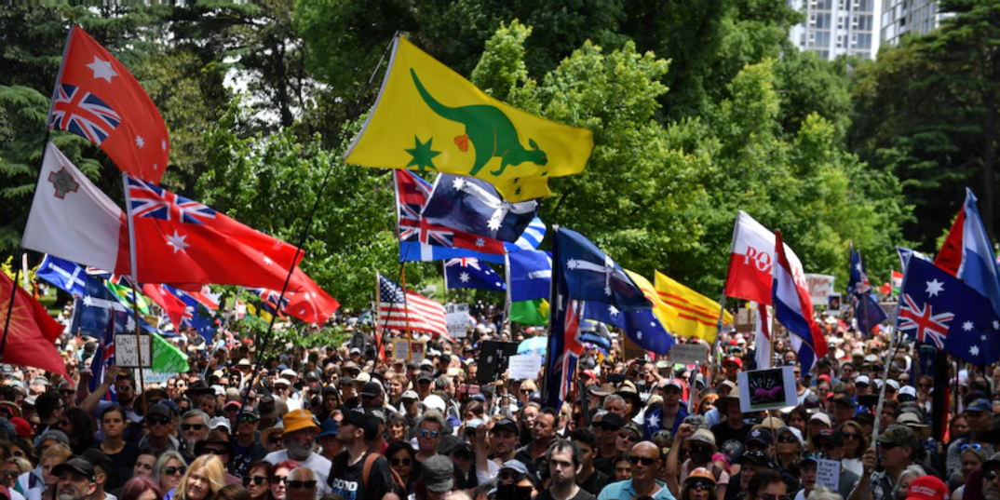

/atlas_of_weak_signals
(25_march_2022)
These sessions of Atlas of Weak Signals 2.0 were run by Jose Luis de Vicente, a cultural
researcher and curator working in the space between the arts, technology, and innovation.
He was the creator of the concept of Weak Signals, situations that set trends in a specific
direction. During these sessions, Jose Luis tried to explain his vision of some of the hot topics
and crises we are living in nowadays.
.climate_emergency

The first session of this course put the focus on climate change and the environmental emergency we have reached. We went to the focus of the problem, what brought us to this point, how the industrial revolution and mass consumption affected the planet. We talked about the current reality and some situations created by climate change and the increase in temperature all around the globe. Finally, we discussed the future consequences this can have if we don't start doing things in another way, both environmental and social.
It was a bit scary and hopeless to see everything that was going on but sometimes it's necessary to have this critical mind and assume what has been done in order to change what is to come.
.jobs_and_work

During the second session, the hot topic was "jobs". We began the session by discussing what a job is and means to us. Many interesting ideas came out such as "a trade of time" or "a creation of self-worth". Jose Luis explained some facts about jobs in relation to salaries, and how the 1% of the population has the same amount of money as the other 99%. We talked about job automation and how this could transform our roles in society. How this could make a part of the population "useless". We also reflected on how would society be if people didn't have to work and of course, this led to many different opinions divided into "we would have more time for ourselves" and "we wouldn't know what to do".
I found it really interesting to reflect on this topic. We are always told to work and to get a job and to earn money and we never think of what's behind it, of our role in the system and of what could happen in the next years.
.nations_and_states

Finally, the third session dealt with the subject of nations and states. We talked about the identities and backgrounds of our families and how unique we are when we are all mixed together. We discussed the role states have nowadays, and how they became just another way of separating people and creating differences between equals. How being part of a state gives you a higher status than being part of another. How this potentiates classism and racism.
In my opinion, no borders would be needed if everyone respected every nation's culture, language and traditions, without wanting to impose a culture or a way of doing things over another.